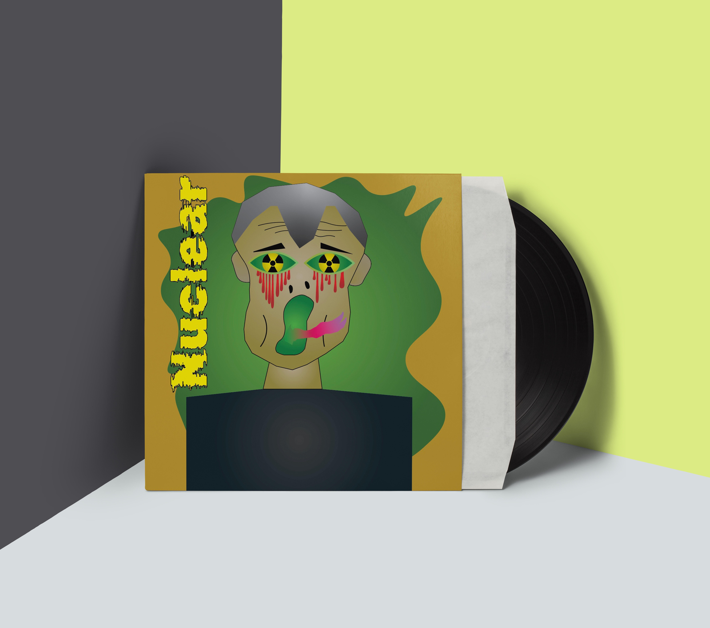
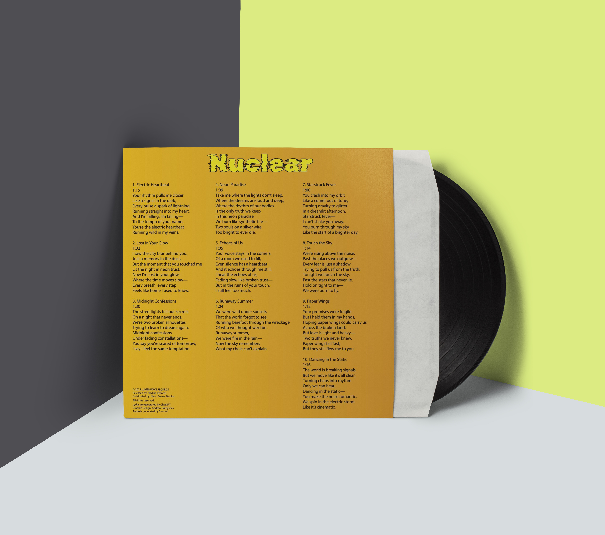

Insert
Information about the song "Neon Paradise"
“Neon Paradise” is one of the standout tracks on Nuclear, capturing the band’s signature blend of dystopian atmosphere and euphoric electronic energy. The song was inspired by the band’s late-night drives through abandoned industrial districts, where the only lights came from flickering neon signs and passing trains. According to the band, “Neon Paradise” represents a false utopia — a place that looks vibrant and alive on the surface but is actually built on decay and unresolved pasts. Musically, the track layers shimmering synth arpeggios over a deep, pulsing bass line, creating a feeling of moving through a city that never fully sleeps. The chorus explodes with neon-bright chords, echoing the illusion of beauty in a world that’s falling apart. Lyrically, it centers on characters searching for meaning inside artificial lights, hoping that something real can exist in a place designed to distract.